Cannabis tissue culture, start to finish
How to grow a cannabis plant from a small piece of tissue in a sterile jar, at home and in a licensed facility. Every term is defined. Every recipe has numbers. Follow the sections in order.
Purpose and scope
Read the sections in order the first time. After that, jump to the stage you are on. Printable jobs and forms live in the tissue culture SOP.
This guide is for two setups. A home bench using a plastic box and a pressure cooker. And a licensed medicinal facility with a filtered-air hood and written records. The plant work is the same. The testing and paperwork are not.
You cut a small piece of a living cannabis plant. You put it on sterile jelly that contains mineral salts, sugar, and sometimes plant hormones. In a sealed jar, that piece grows into a new plant that is genetically the same as the plant you cut it from.
Definitions
Every technical term, in one place.
| Term | Meaning |
|---|---|
| Acclimatization / hardening | Lowering humidity in steps so a jar plant can live in room air and soil. |
| Activated charcoal | Black powder in the gel that binds brown leak compounds. It can also bind hormones. |
| Agar / gellan / Phytagel | The setting agent. More agar = firmer gel = drier air in the jar = less glassy growth. |
| Aseptic technique | Working so that stray microbes do not reach the sugar jelly. |
| Autoclave | A machine that holds 121 °C steam at 15 psi. A pressure canner that holds 15 psi is the home version. |
| Auxin (IBA, NAA, IAA) | A hormone class that tells tissue to make roots. |
| Callus | A lump of unspecialised cells. Common as a side-effect. Not a useful production method for cannabis in Holmes 2021. |
| Cytokinin (mT, TDZ, BA) | A hormone class that tells tissue to make shoots. |
| DKW | Driver and Kuniyuki Walnut salts. An alternative mineral mix to MS. Results on cannabis depend on the cultivar. |
| Endophyte | A microbe living inside tissue that looks healthy. Bleach on the surface cannot reach it. |
| Explant | The piece of plant you put in the jar. |
| GACP / GMP | Growing practice versus manufacturing practice. Starting plants sit between the two. |
| HEPA / laminar-flow hood | A fan and filter that blow a sheet of clean air across the bench. Not a biosafety cabinet. |
| HpLVd / HLVd | Hop latent viroid. The usual cause of “dudding.” 256 letters of RNA. |
| Hyperhydricity / vitrification | Glassy, waterlogged, brittle growth in the jar. Often too much cytokinin or humidity. |
| In vitro / ex vitro | In the jar / outside the jar. |
| Indexing | Testing a plant for a named pathogen. The only basis for the word “clean”. |
| Initiation (Stage I) | Getting the first living, uncontaminated culture. |
| ISO 5 / ISO 7 | Air cleanliness ratings. ISO 5 is the hood work surface. ISO 7 is a typical room around the hood. |
| Meristem | The dome of dividing cells at a shoot tip. No sap tubes yet. |
| Meta-Topolin (mT) | A cytokinin that works for starting cannabis cultures. Too much of it makes glassy Stage II plants. |
| Micropropagation | Using tissue culture to make many identical plants. |
| MS salts | Murashige and Skoog, 1962. The default mineral mix. 4.4 g of powder per litre. |
| Nodal segment | A stem piece with one bud. Easy. Often still contaminated inside. |
| PGR | Plant growth regulator. A hormone you added on purpose. |
| Phenolics / browning | Brown compounds that leak from a cut and stain the gel. |
| Photoautotrophic micropropagation | No sugar. Ordinary fertiliser. Extra air. Plants look like nursery cuttings. |
| PPM | Plant Preservative Mixture. An antimicrobial you can autoclave with the medium. |
| qPCR / RT-qPCR | A lab test that looks for the viroid’s RNA. “Not detected” is not the same as “cannot exist.” |
| Recalcitrant | A species that is hard to start in a jar. Cannabis is one. |
| Somaclonal variation | Genetic changes that appear after many recuts in the jar. |
| Still-air box | A clear tub with arm holes. Air inside is still, so spores do not drift onto open jars. |
| Subculture | Moving tissue onto fresh medium. |
| Temporary immersion | Liquid medium that wets the shoots on a timer, then drains. |
| TDZ (thidiazuron) | A very strong cytokinin. Use small doses. |
| Totipotency | A living plant cell can rebuild the whole plant. |
| Vascular tissue | Xylem (water) and phloem (sap). The sap tubes are how the viroid moves. |
Evidence and limitations
We've gone to great lengths to keep these guides honest. One of the main ways we do that is self-review: we actively look for claims that are subjective, only lightly backed by literature, or based on grower practice rather than a controlled study — and we call those out instead of dressing them up as settled science.
Often there simply is no paper for the decision you're making. In those cases we're drawing on what other growers report and what has worked in our own rooms. That can still be useful — but it is not a lab proof. Do what works for your plants, your room, and your meters. If a table disagrees with your crop, believe the crop and log the difference.
- Core definitions and measurement units used in the paper
- Safety-critical limits where occupational or standards sources are cited
- Numeric stage targets (light, climate, feed) as starting bands, not laws
- SOPs that work in many rooms but need your genetics and meters
- Any single-number 'guaranteed' yield or potency claim without a multi-site trial
- Controller setpoints copied from another facility without re-calibration
See something glaringly wrong? Tell us and we'll fix it. Please open a GitHub issue with the paper name and what looks off (include a source if you have one): Report an accuracy issue. Local law, labels, and licences always override any recipe here. Inline notes labelled grain of salt flag the highest-risk over-trust points in the text.
Tissue culture workflow
Every tissue-culture run uses the same five stages. Cannabis adds two extra jobs: cutting the growing tip to leave disease behind, and a lab test that checks whether that worked.
A rooted plant in a pot takes about 10–15 weeks. You have not proved it is free of disease. A mother plant that tested negative for Hop latent viroid takes a meristem cut plus a lab test. That is 5–8 months. A kit that only grows plants in jars cannot claim the second result.
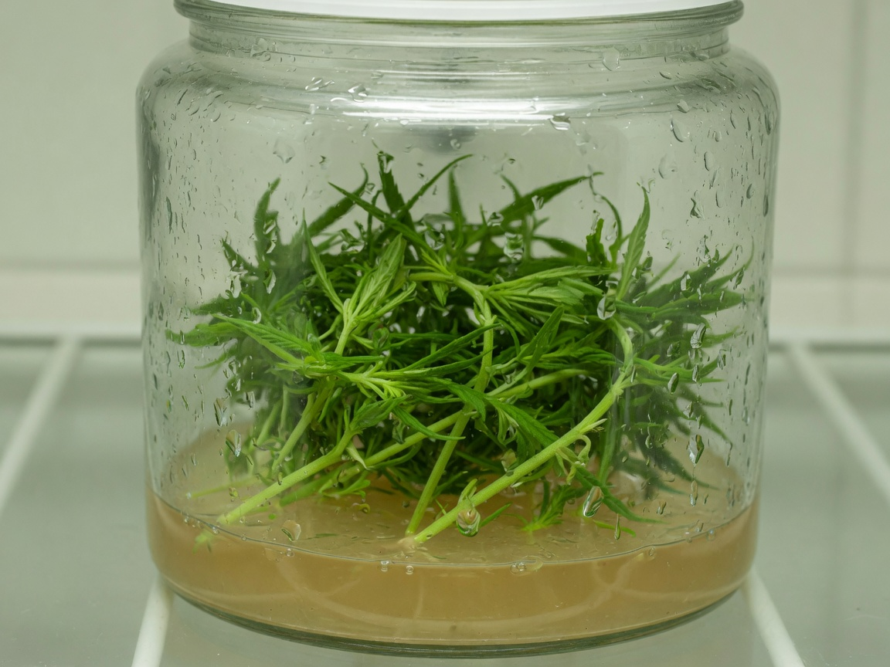
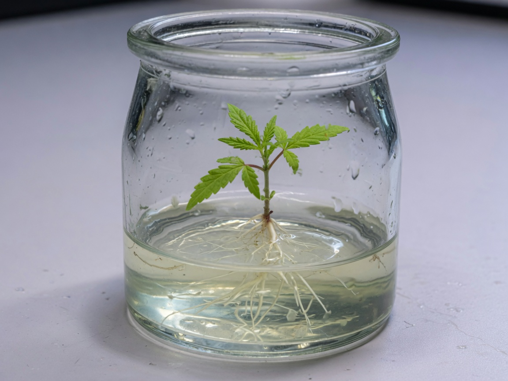
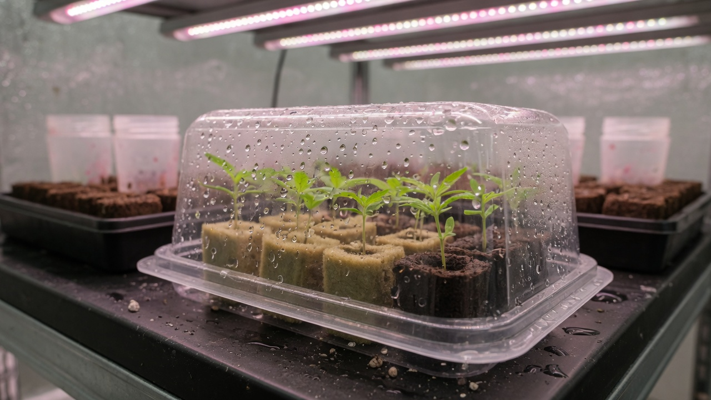
Applications of cannabis tissue culture
A normal cutting copies the plant and also copies every pest, fungus and viroid the plant is carrying. Tissue culture can start a new plant from tissue that those organisms have not reached yet.
Hop latent viroid (written HpLVd or HLVd) is a small loop of RNA, 256 letters long. It has no protein coat. It lives inside plant cells and moves in the sap.
A 2021 industry survey of about 200,000 tissue tests is the figure most people quote: about 90% of California facilities had at least some infection.[5] A licensed-Canada study of 15,947 samples from nine provinces found 25.6% positive overall, with rates from 5.3% to 92% depending on province and year.[6] Infected plants lost 12–42% of height and flower weight, depending on the cultivar. No spray reaches the viroid. It is inside the cells.
- Less space. A rack of jars holds many plants. A mother room of the same plant count takes a whole room.
- Same plant every time. Seed from cannabis is genetically mixed. A medicinal flower crop needs the same female chemotype every cycle. Tissue culture copies one plant.
- Health, not a new genotype. Years of taking cuttings lets mutations and microbes build up.[9] Starting from a meristem gives you the same genetics with fewer hitch-hikers. It does not rewrite the DNA.
- Storage and shipping. A jar, or a frozen shoot tip, is easier to move and back up than a 1.5 m mother plant.
It does not change the cultivar. It removes diseases and pests the plant picked up. A cleaned plant can be infected again the next time a dirty blade or a shared tray touches it.
Shoot-tip anatomy
Viroids and viruses move in the sap tubes. The meristem is a dome of dividing cells at the very tip of a shoot. Those cells do not have sap tubes yet, and they divide faster than the pathogen can move forward. If you cut just that dome, you sometimes leave the disease behind.
How often? Punja (2025) cut meristems 0.2–0.4 mm across from 91 infected plants of 8 cultivars. At six months, 40.7% tested negative for Hop latent viroid. The range by cultivar was 0% to 100%.[6] A meristem cut is a filter. It is not a guarantee.
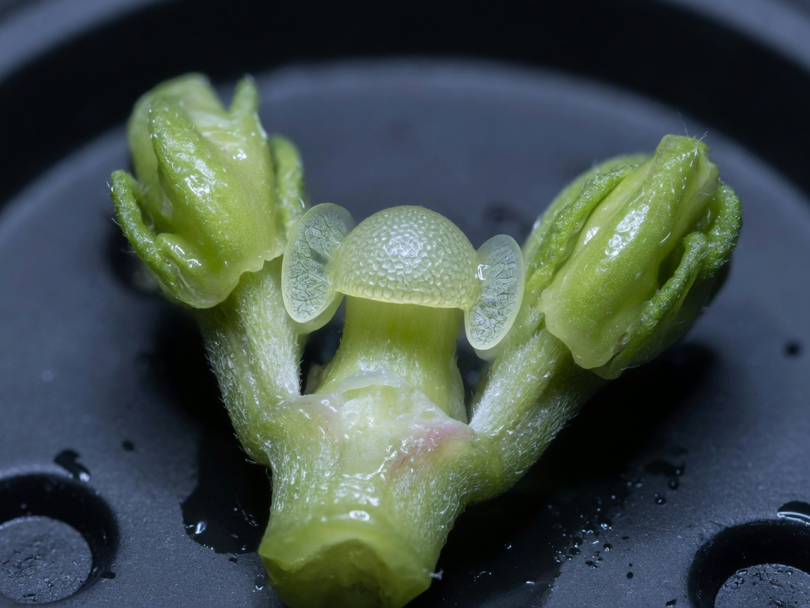
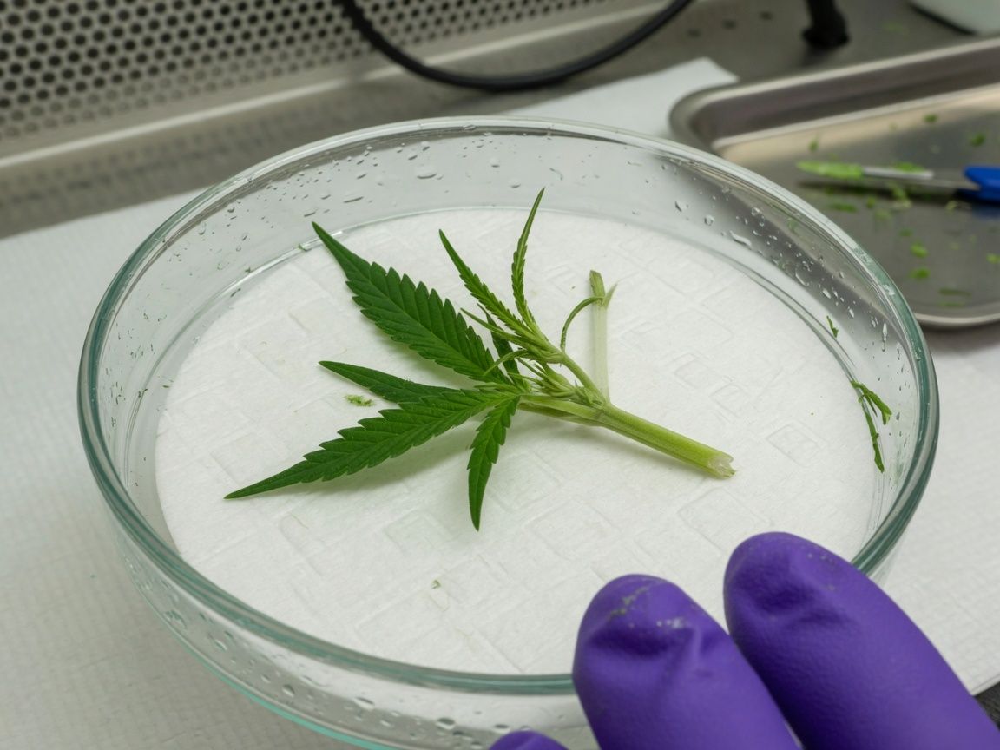
Meristem culture can produce a plant that tests negative for the viroid. It does not make a plant that cannot catch it again. And “negative” is only honest after a lab test (section 16).
Home laboratory setup
You need three things: a pocket of still clean air to work in, a way to heat jars to 121 °C, and a warm lit shelf. You do not need a white coat. You do not need a hospital cabinet.
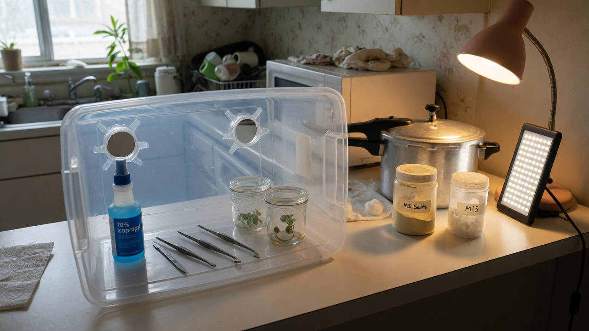
What to buy
| Item | Build it yourself (about $200–550) | Buy a kit (Athena or Plant Cell Technology) |
|---|---|---|
| Clean air | Clear storage tub with two arm holes cut in one side. Wipe with 70% alcohol. This is a still-air box. | A small laminar-flow hood with a HEPA filter (Athena kits include one). |
| Heat-sterilise media | Stovetop pressure canner that holds 15 psi for 20 minutes. Instant Pots do not hold 121 °C. | Small autoclave included in the Athena kit. |
| Medium | MS powder, table sugar, agar, optional hormones (mT, IBA). | Pre-mixed SHOOTS and ROOTS sachets. The formula is not published. |
| Extra antimicrobial | PPM, 0.5–2 mL per litre of medium. Optional. | Same, or the kit’s hypochlorous “Cleanse”. |
| Jars | Baby-food jars or Magenta vessels. Fill about one third. | Kit vessels, sometimes with filter vents. |
| Proof the plant is disease-free | None at home. Pay a lab for a qPCR test if you need that claim. | None in the kit. Still pay a lab. |
| Athena kit street price has been about $1,800–2,295. The Plant Cell Technology starter kit is a smaller box of ingredients and vessels. Prices change. | ||
A biosafety cabinet protects the person from dangerous germs. Here you are protecting the plant from kitchen air. A still-air box or a laminar-flow hood is the right tool.
What a laminar-flow hood is
A fan pushes room air through a HEPA filter. The filter removes more than 99% of particles. The clean air then blows in one sheet across the bench, toward you or downward, depending on the hood. Work in that sheet. Do not block it with clutter. Do not wave your hands upstream of an open jar.
Shelf settings
| Setting | Target | Why |
|---|---|---|
| Temperature | 24–26 °C (21–27 °C still works) | Holmes used 25 ± 2 °C |
| Day length | 16–18 hours of light | Keeps plants vegetative. 12 hours of light will start flower. |
| Light level | About 70–100 µmol m⁻² s⁻¹ at the jar | Holmes used 102. Kodym measured about 70 inside the vessel. |
| pH of the medium | 5.6–5.8 before you add agar and before you heat it | Holmes set 6.6 so it landed near 5.8 after autoclaving. |
| Wait after pouring | 7 days before you trust a new batch of jars | Slow-growing microbes show up in that week. |
If you dip tools in alcohol and pass them through a flame, keep the open alcohol far from the flame. A glass-bead steriliser at about 250 °C for about 20 seconds is safer inside a plastic box. Punja (2025): 70% ethanol does not destroy Hop latent viroid RNA. Household bleach at 5–10% of 8.25% sodium hypochlorite for 1–2 minutes does, as does 1000 ppm hypochlorous acid for 1 minute. An Instant Pot is not an autoclave.
Licensed facility laboratory layout
A licensed lab is the same plant work plus written records and a disease-testing programme. It is not a larger kitchen box.
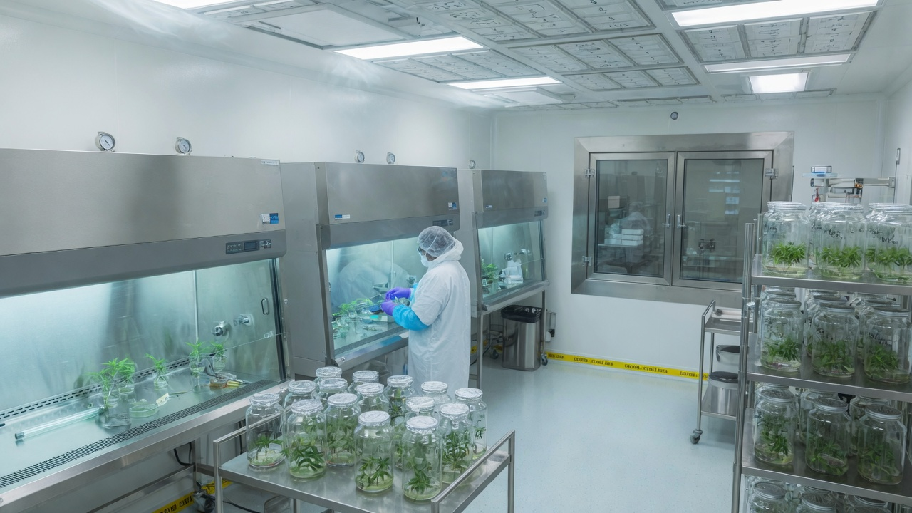
What the air ratings mean
ISO 5 and ISO 7 are particle counts. ISO 5 is cleaner than ISO 7. In a plant lab, ISO 5 is the work surface of the laminar-flow hood. ISO 7 is a typical rating for the room around the hood. Plant tissue culture is not a hospital sterile-fill suite and it is not a biosafety Level 2 lab. You are keeping kitchen microbes out of sugar jelly, not handling human pathogens.
What inspectors ask
Medicinal flower is usually grown under GACP (Good Agricultural and Collection Practice). A manufactured product may sit under GMP (Good Manufacturing Practice). The tissue-culture lab sits in the middle. An inspector will ask two things: how you know this plant is the cultivar on the label, and how you know it is not carrying Hop latent viroid. Answer with a genetic identity test and a pathogen test. Do not answer with a story about bleach.
- Air. Cut and plate under a laminar-flow hood. Room usually ISO 7.
- People. Gown, hair cover, gloves, no jewellery. Walk in one direction, dirty to clean. One person at one hood is one work unit.
- Lot numbers. Every autoclave load, every batch of medium, every cutting session gets a number you can trace.
- Quarantine. Incoming mothers stay in a separate room until they are tested. Failed plants are destroyed.
- Replace mothers. Mutations build up as you recut the same in-vitro line (Torkamaneh 2024). Restart from a tested backup.
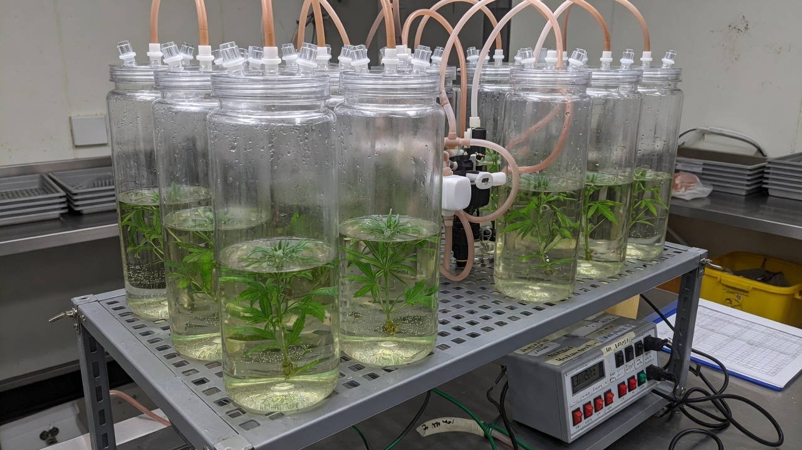
After Stage I is clean and you have a recipe that works for that cultivar. Kodym and Leeb (2019): 97.5% of shoots rooted and hardened in 3 weeks on rockwool with no sugar and no hormones. Do not buy a bioreactor to cover a 60% contamination rate.
Aseptic technique
Most first-run losses are contamination. Contamination is almost always a technique problem, not bad luck.
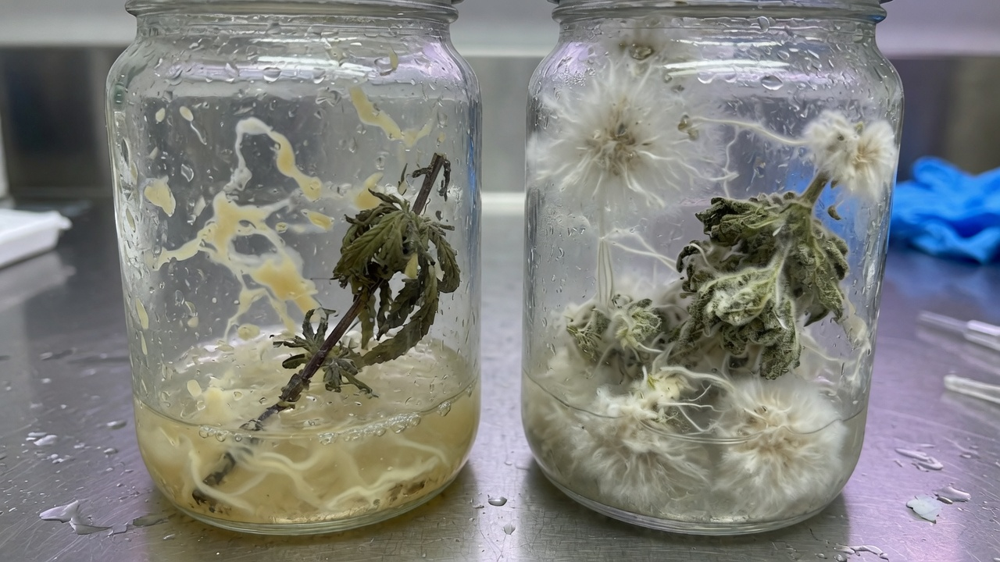
- 1Clean the work areaWipe the box or hood and the bench with 70% alcohol. Let it dry. If you use a still-air box, turn fans and air-conditioning off.
- 2GlovesNew nitrile gloves. Spray them with 70% alcohol. Spray again every time a hand leaves the work area.
- 3Bring only what you needJars, tools and plant pieces for this session. Extra objects collect dust.
- 4Sterilise tools before every cutAlcohol then flame, or glass beads at about 250 °C for about 20 seconds. Then let the tool cool. A hot blade cooks the plant.
- 5Open lids only when you use the jarCome in from the side. Do not pass your hands over an open jar.
- 6Wait seven days before you trust a jarA jar that looks clean on day 2 can still grow microbes in week 2. Internal microbes often appear then.
Holmes (2021): about half of stem pieces from commercial mothers still grew fungi or bacteria after a full bleach protocol. The microbes live inside the pith. PPM at 2 mL per litre delayed them by 1–3 weeks. It did not remove them. Meristems were cleaner. That is why section 11 exists.
Medium preparation and sterilisation
The jelly is mineral salts, sugar, vitamins, optional hormones, and agar. Set the pH first. Add agar second. Heat last. The sealed jar is too dim for the plant to feed itself, so the sugar is the energy source.
Starter recipe for 1 litre (initiation or multiplication)
| Ingredient | Amount per litre | What it does |
|---|---|---|
| RO or distilled water | Start with about 800 mL, top up to 1 L | Tap minerals change the recipe |
| MS basal salts | 4.4 g | The standard mineral mix |
| Sucrose (table sugar) | 30 g | Energy |
| myo-Inositol | 0.1 g | Standard extra |
| Activated charcoal | 1 g (optional) | Binds brown compounds the cut leaks. Holmes used 1 g/L. |
| Agar | 6–8 g. Use 9.5 g if shoots go glassy. | Sets the jelly. Firmer gel means less water in the leaves. |
| PPM (optional) | 0.5–2 mL | Slows some microbes. Not a substitute for sterile work. |
| pH | 5.6–5.8 before agar and before heating | Holmes set 6.6 so it landed near 5.8 after heating. |
Hormone amounts published for cannabis
| Stage | Hormone | Dose | Source |
|---|---|---|---|
| Starting the culture | TDZ + NAA | 1 µM + 0.5 µM | Lata 2009 / Holmes |
| Starting the culture, gentler | meta-Topolin | 0.48 mg/L | Das 2024, from Lata 2016 |
| Long-term multiplication | None | MS plus extra calcium | Das 2024 MM12 — less glassy growth |
| Extra calcium | Calcium nitrate + calcium gluconate | 0.71 g/L + 1.35 g/L | Das 2024 |
| Roots in the jar | IBA | 2.5–5 µM (about 0.5–1 mg/L) | Holmes: 5 µM worked better than 42 µM |
| Roots, extra | Sodium metasilicate | 6 mg/L | Holmes: better leaves, 40% rooted |
| Roots, extra | Silver nitrate | 40 µM with IBA | Holmes: more roots than IBA alone |
| Roots in a plug, not in gel | IBA dip | 15 mM for 2–4 minutes | Ioannidis 2022, up to about 100% rooting |
MS is Murashige and Skoog salts, the default mix. DKW is Driver and Kuniyuki Walnut salts, a different mineral mix. Page et al. (2021) found DKW healthier than MS on several cultivars. Holmes found the opposite on two cultivars. Das (2024) had DKW cultures brown and die. Use MS until it works. Then try DKW as a single experiment.
- 1Dissolve salts and sugarIn about 800 mL of RO or distilled water. Add vitamins, charcoal and PPM if you are using them.
- 2Set pH5.6–5.8 before you add agar. A drop of dilute acid lowers pH. A drop of dilute base raises it.
- 3Add agar and heat until it dissolvesPour jars about one third full.
- 4Heat-sterilise121 °C at 15 psi for 20 minutes. In a pressure cooker: same numbers, jars on a rack, not sitting in a flood of water.
- 5CoolYou can cool the jars on a slant so the gel surface is easier to plant into. Leave new jars for 7 days. If they stay clear, use them.
Explant surface sterilisation
Surface sterilising kills microbes on the outside of the plant. It cannot reach microbes living inside the stem. Times are a compromise: long enough to kill the surface, short enough not to kill the plant.
Working method for stem pieces and shoot tips from a living mother
- 1Prepare the mother plant (Stage 0)Keep it vegetative. Scout for pests. Prefer a young plant in a relatively clean substrate. Holmes found old plants in coco dirtier. A systemic fungicide (fluopyram, Luna) on one cultivar dropped contamination from 88% to 32%. That does not mean drench every plant. It means the mother plant’s health matters.
- 2Cut in the morningShoot tips or stem pieces 10–15 mm long. Strip large leaves. Keep the pieces wet and cool.
- 3WashRunning tap water plus a drop of dish soap or Tween-20, 10–20 minutes. Soap loosens the film microbes sit in.
- 470% ethanol30–60 seconds. Longer damages cannabis.
- 5BleachHolmes: 10% household bleach (about 0.625% sodium hypochlorite) plus 0.1% Tween-20, 20 minutes, stirring. Das (2024): 1% sodium hypochlorite for 30 minutes gave 55% usable pieces. 10 minutes left 100% dirty. 60 minutes killed 100%.
- 6Rinse three timesSterile water, 3–5 minutes each. Then, in the hood, cut off the bleached ends and put the piece on the gel.
| Source | Sodium hypochlorite | Time | Notes |
|---|---|---|---|
| Holmes 2021 | 0.625% (10% household bleach) | 20 min | Plus 1 minute of 70% ethanol. About half of stem pieces still contaminated. |
| Das 2024 | 1% | 30 min | Best usable rate in that trial. Carbendazim increased plant death. |
| Kodym 2019 | 0.5% | 20 min | Then three 10-minute sterile-water washes. |
| Plant Cell Technology general blog | 10–20% bleach | 10–20 min | Not written for cannabis. Start milder. |
| Plant Cell Technology, calcium hypochlorite | 3.25% | — | Softer than sodium hypochlorite on some tissues. |
Plant Cell Technology label for ordinary airborne and water-borne microbes: 0.05–0.2% (0.5–2 mL per litre) in the medium. You can autoclave it with the medium. For microbes living inside the plant they prescribe a 4–12 hour shake in 4–5% PPM plus triple-strength MS salts, then plate on 0.05–0.2% PPM. Holmes: 2 mL per litre delayed contaminants 1–3 weeks, then they appeared anyway. PPM is an extra. It is not a meristem cut.
Stage I: starting the first culture
One plant piece, one jar. The job this month is a living, uncontaminated culture. Not a tray of plants.
Holmes grew shoots from both meristems and stem pieces on MS plus 1 µM TDZ, 0.5 µM NAA and 1 g/L charcoal. Meristems were slower (measure at 10 weeks) and cleaner. Stem pieces were faster (measure at 6 weeks) and dirtier. Cultivar mattered. Moby Dick meristems averaged 4.5 cm. Space Queen grew poorly.[1]
Das (2024) got the best start on MS plus 0.48 mg/L meta-Topolin. Shoot tips under 5 mm had less contamination than full shoot tips or stem pieces, and less glassy growth than bare meristems.[4]
- 1Plant the pieceStand it so the cut base is in the gel and the bud is above the gel. One piece per jar until you know your success rate.
- 2Close and labelCultivar, date, medium, what you cut. Lid on at once.
- 3Shelf24–26 °C, 16–18 hours light, about 100 µmol. Do not open the jar every day to look.
- 4Throw out failures earlyCloudy gel, fuzz, or a ferment smell: seal the jar in a bag and bin it. Do not open it in the clean hood.
- 5Move the winnersAt 3–4 weeks, move clean growth onto fresh medium. Das found Stage I recipes went glassy after 2–3 moves. Switch to the Stage II recipe in section 12.
A jar that looks clean on day 7 can still grow microbes in week 3. Do not cut new pieces from a culture that has not sat out that wait.
Meristem dissection for pathogen elimination
This is the cut that has the best chance of leaving Hop latent viroid behind. You need a stereo microscope. Do two months of stem-piece cultures first so your sterile technique is solid.
Set up the bench first
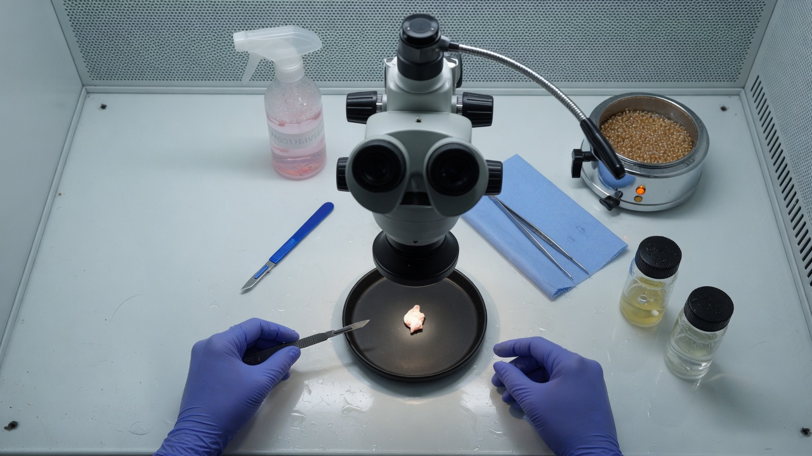
Tools
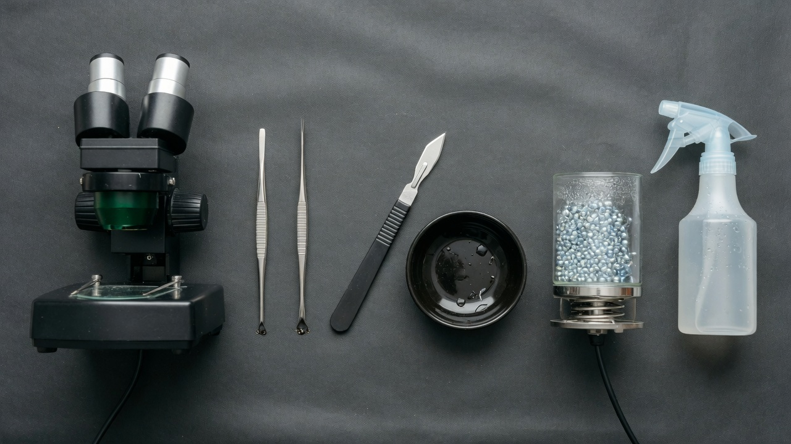
Hands
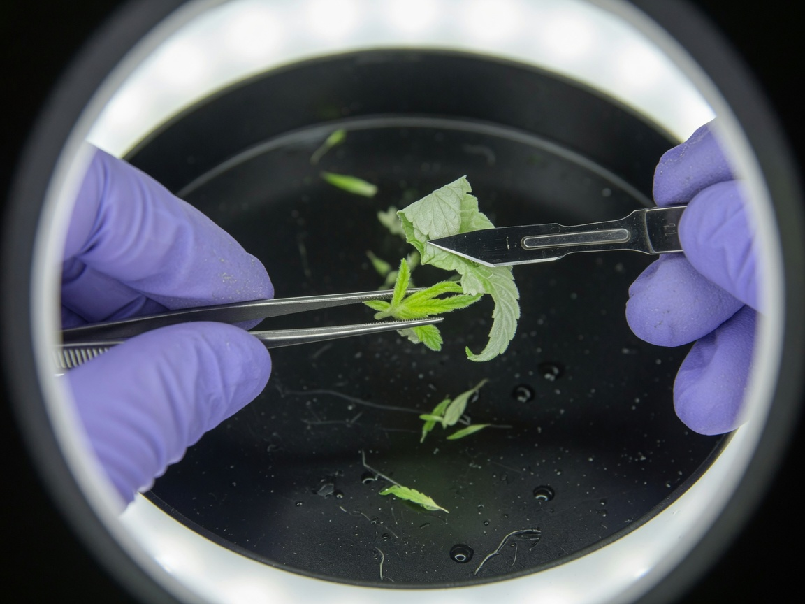
The eight movements
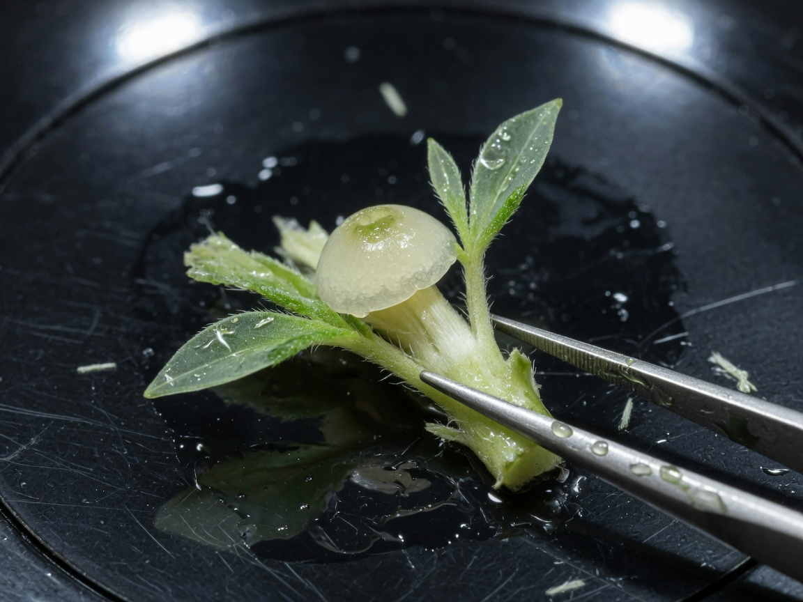
Do it in this order
- 1Start with new growthTake a 10–15 mm tip from a vegetative shoot in the morning. Strip the large leaves before you go to the hood. Prefer young flush growth. Heat treatments on the mother exist in the literature and vary from 0% to 94% clearance by cultivar. Do not copy a blog temperature.
- 2Sterilise the toolsBeads at about 250 °C for 20 seconds, then cool. Or alcohol then flame, then cool. A hot blade cooks the dome.
- 3Dish under the microscopeOne drop of sterile water on the black dish. One tip on the drop. Focus at 10–20× first, then go to 30–40×.
- 4Left forceps, 3–5 mm down the stemTip pointing up. Wrist on the bench. Do not pinch the dome.
- 5Peel outer leaves with the #11 bladeBlade almost flat. Slide under the leaf. Flick it away. Resterilise the blade after every few peels.
- 6Stop at two tiny leavesHolmes left two primordial leaves on as a bleach shield. You should see a pale dome. If you still only see green, keep peeling.
- 7Surface-sterilise that tiny tipSame bleach sequence as section 09, but shorter if the tissue is already pale. Then rinse in sterile water.
- 8One nick under the dome0.2–0.4 mm. One cut. Do not saw. Pick the piece up with forceps or a sterile needle.
- 9Stand it on the gelCut base in the gel. Lid on at once. Label: cultivar, date, meristem. Expect 4–8 weeks before it looks like a plant. Holmes used MS + 1 µM TDZ + 0.5 µM NAA + 1 g/L charcoal.
- 10Then test itSection 16. One negative test on a 1 cm plantlet is a start. Test again after it has grown new leaves. Expect about 41% negative at six months, not 100%.
A stem-piece culture does not remove pathogens that live inside the plant. If you did not send a sample to a lab, you made a clone in a jar.
Stage II: multiplying shoots
The aim is more shoots from one clean culture. Cannabis often does better as one healthy main shoot that you recut, not as a hormone-forced clump of glassy leaves.
Das (2024) stopped adding meta-Topolin in Stage II because 0.5 mg/L increased glassy growth. The best medium in that study was MS with no hormone, extra calcium nitrate, extra calcium gluconate, and 9.5 g/L agar. Shoot tips beat stem pieces. Across eight cultivars the number of new usable pieces per plant ranged from 1 to 6.[4]
Lata (2016) used meta-Topolin to make many shoots at once. That works. It also produces glassy plants if you keep them on it for months. Use it to make numbers, then move the line onto the leaner medium.
- 1CutTake a 15–25 mm shoot tip, or a stem piece with a visible bud, from a clean Stage I plant.
- 2New jarSame medium or the leaner Stage II medium. Do not reuse an old jar.
- 3How many per jarHome: 1–3. Facility: as many as your contamination rate allows.
- 4Timing3–4 weeks. If growth stops, check pH, charcoal (it can bind hormones), and whether this cultivar simply dislikes the medium.
Torkamaneh et al. (2024): mutations in tissue-cultured cannabis increase with the number of times you recut the line.[9] Do not run production for years off one in-vitro generation. Start again from a tested mother.
Stage III: growing roots
A shoot with no roots is not a plant you can pot. Growing roots is a separate step.
Four published methods
| Method | What you do | Published result | Source |
|---|---|---|---|
| IBA in the gel | Half- or full-strength MS, 5 µM IBA, 4 weeks | 83% rooted at 5 µM, versus 44% on the shoot medium. 42 µM was worse. | Holmes 2021 |
| Silicate or silver | Sodium metasilicate 6 mg/L, or silver nitrate 40 µM plus IBA | Better leaf shape. More roots. | Holmes 2021 |
| Dip, then a plug | Dip the cut base in 15 mM IBA for 2–4 minutes. Push it into a peat sponge or rockwool. | Up to 100% rooted. About 95% established in the field. | Ioannidis 2022 |
| No sugar, extra air | Rockwool, ordinary cannabis fertiliser, vented jars, no sugar, no hormones | 97.5% rooted and hardened in 3 weeks. 100% survived in the glasshouse. | Kodym and Leeb 2019 |
You can take a shoot out of the jar and root it in a plug with rooting hormone, the same way you root a normal cutting. You do not have to grow the roots in the gel.[8]
- 1Pick a shoot2–4 cm tall. Not glassy. Not browning.
- 2Choose a methodHome: IBA in the gel, or an IBA dip into a sterile plug. Facility: dip into a plug, or the no-sugar vented-jar method.
- 3WaitRoots in 2–4 weeks. If nothing by week 5, recut the base and use less IBA. More hormone is not always better.
- 4Move itIf roots are in gel, rinse the gel off in sterile water. If roots are in a sponge or cube, plant the sponge or cube.
Stage IV: moving the plant out of the jar
Inside the jar the air is saturated and the plant is eating sugar. The leaf surface is thin. If you put that plant straight onto a dry bench, the leaves collapse. You lower the humidity in steps.
| Plug or cube | Survival in Holmes (cultivar Moby Dick) | Notes |
|---|---|---|
| Rockwool cubes | 83% | Looked the strongest |
| Peat plugs | 76% | Das (2024): 16 of 18 survived in coco plugs (90%) |
| Hydro cloner | 57% | Works. Least forgiving. |
- 1Soak the plug firstUse a mild vegetative nutrient at about pH 5.8. Rockwool or coco. Not heavy potting soil.
- 2Dome onMist the walls of the dome, not the plant tops. 16 hours light, gentle intensity, 24 °C.
- 3Open the ventsDay 7: vents half open. Day 9: vents fully open. Day 14: lid off. Kodym: lids upside-down for 3 days, then off for 2 days in low light.
- 4Then treat it like a new cloneDo not switch it to 12 hours of light for several weeks.
A plant that rooted on rockwool with no sugar already has a thicker leaf surface and a real root. Hardening takes a few days instead of two weeks.
Failed culture symptoms
Most failures are one of four things. Match the picture. Change one variable. Run again.
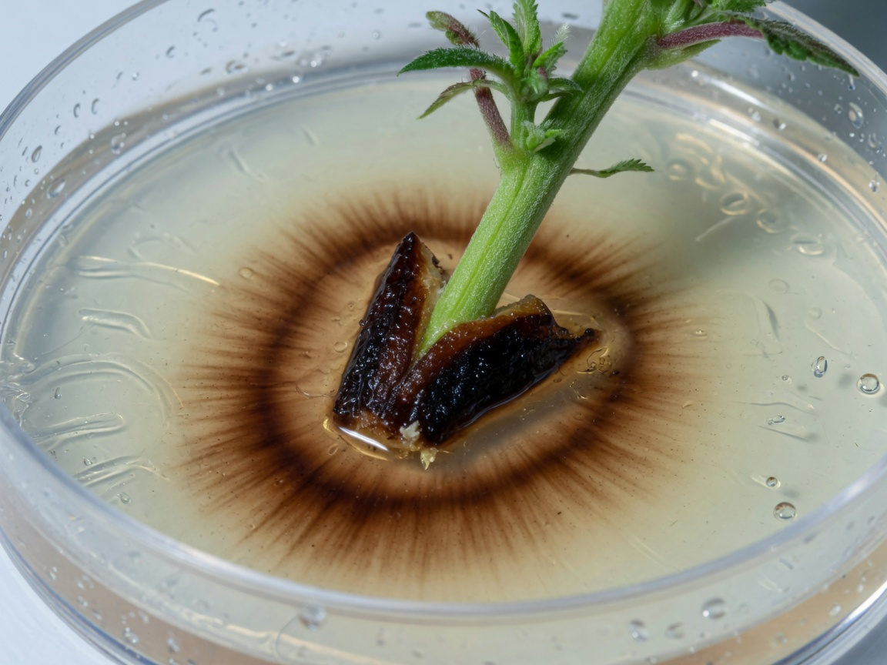
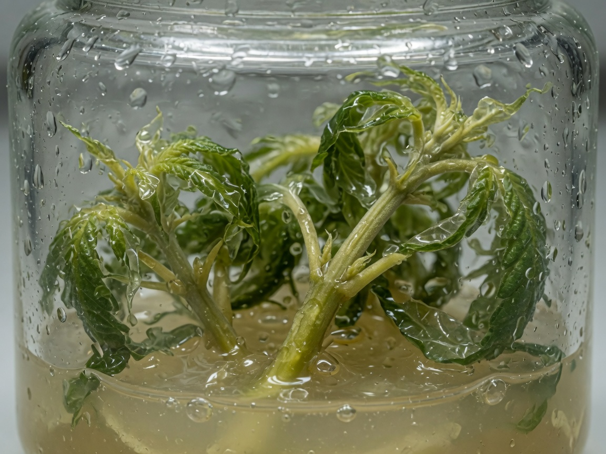
| What you see | Name | What to do |
|---|---|---|
| Cloudy gel, slime, sour smell | Bacteria, often from inside the stem | Bin. Next time: younger mother, meristem or small shoot tip, optional PPM soak, slower hands. |
| White, green or black fuzz | Fungi | Bin. Holmes found these in the pith. Change the mother’s substrate. |
| Brown ring, plant piece turns tan | Phenolics (browning) | Charcoal, move sooner, 48 hours in the dark, antioxidant dip. |
| See-through, watery, brittle leaves | Hyperhydricity | Less cytokinin, 9.5 g/L agar, vented lid, Das hormone-free Stage II. |
| Stalled, pale, no roots | Wrong cultivar or tired medium | Try 5 µM IBA or 6 mg/L silicate. Or try DKW once. |
| Looks fine for 18 days, then microbes appear | Internal microbes (endophytes) | Common in cannabis. Cut a meristem, or accept some loss. |
Das (2024): 45–95% of first pieces lost, depending on cultivar. One hemp line kept about 75%. Holmes: up to half of stem pieces contaminated. Keeping 40% of a new cultivar alive and clean is a good first week.
Testing for pathogen-free stock
A meristem plant that was never tested is a clone. Licensed facilities ship a test report. If you skip this section, do not say you cleaned the plant.
qPCR (and RT-qPCR) is a lab test that looks for the viroid’s RNA. “Not detected” means the test did not find it in that sample. It does not mean the plant cannot carry it later, and it does not mean the test cannot miss a low amount.
| Pathogen | What it is | Can tissue culture remove it? | How you test |
|---|---|---|---|
| Hop latent viroid (HpLVd) | Viroid, 256-letter RNA | Punja 2025: 40.7% negative at 6 months (0–100% by cultivar) | RT-qPCR. Roots are the most reliable sample. |
| Other viroids | Viroid | Same idea. Less cannabis data. | RT-qPCR panel |
| Lettuce chlorosis, CMV, AMV | Virus | Often, if you cut a meristem. Confirm with a test. | RT-qPCR or ELISA |
| Fusarium, Penicillium inside the stem | Fungus in the pith | Meristem usually. Stem pieces usually not. | Culture plus DNA test |
| Broad mites, russet mites, powdery mildew | Surface pests or surface fungus | Yes. They cannot live in a sealed jar. | Scout the mother. Tissue culture is extra, not required. |
| Hop latent viroid in seed | Passed from parent to seed | Cut a meristem from the seedling, then test. | Seed transmission is documented. Treat seed from an infected parent as infected until tested. |
- 1Sample the right tissueA new fully expanded leaf, or the leaf stalk, from a plant that has grown since the meristem cut. A 5 mm meristem has too little tissue to test.
- 2Use a lab that runs cannabis Hop latent viroidA plant-health lab or a cannabis diagnostic lab. Home strip tests are screens, not release tests.
- 3Test againAfter 3–4 weeks in the nursery, and again before a mother goes into production. Uneven amounts of viroid in the plant cause false negatives.
- 4Keep a backup sampleFreeze tissue from every lot you pass. If a flower room later shows dudding, you can check whether the liner was already positive.
Hop latent viroid survives on tools, hands, pots and benches. It lasts about a week in sap and about a month in dried tissue. It can pass through seed.[6] Use dedicated blades. Disinfect with 5–10% household bleach or 1000 ppm hypochlorous acid, not 70% alcohol. Do not share trays.
Plant Preservative Mixture (PPM) and commercial kits
Plant Preservative Mixture (PPM) is the antimicrobial most cannabis tissue-culture forums mention. These are the label rates, not forum guesses.
| Use | Plant Cell Technology label | What Holmes found on cannabis |
|---|---|---|
| In the medium, routine | 0.05–0.2% (0.5–2 mL/L). Autoclave with the medium. | 2 mL/L delayed microbes 1–3 weeks |
| Callus work | 0.05–0.075% | Not the goal of this guide |
| Microbes inside the plant | 4–12 hours in 4–5% PPM plus triple-strength MS salts, then plate on 0.05–0.2% PPM | A 4-hour 5% soak was no better than bleach on one cultivar |
| Woody plants, heavy load | Plate on 0.2% | Cannabis is not woody. Start at 1–2 mL/L |
- Plant Cell Technology’s cannabis articles point to Lata 2016, Monthony 2021, and Ioannidis 2022. Those are the right papers. The articles themselves do not publish a full cannabis recipe.
- Their disease-free article is correct on one point: meristems for pathogens inside the plant, stem pieces for surface pests and for making more plants.
- Their home-lab article includes a fertiliser-and-vitamin-tablet recipe written for houseplants. Do not use that for cannabis. Use Table 3.
- BioCoupler / BioTilt is a small temporary-immersion bottle. Useful after contamination is already low.
- Athena Culture Kit: a real hood, a small autoclave, and premixed SHOOTS and ROOTS. Convenient. The formula is secret, so you cannot adjust hormone when a cultivar goes glassy. The kit does not include a disease test.
Weekly tissue-culture operations
How many plants you ship is your contamination rate multiplied by hours at the hood. Fix the contamination rate before you hire more people.
| Day | Home bench | Licensed lab |
|---|---|---|
| Monday | Wipe the box. Pour any medium you sterilised on Sunday. | Media kitchen: lot number, pH log, autoclave printout. |
| Tuesday | Start 10–20 stem pieces of one cultivar. | Start cultures only from mothers that are in quarantine and already tested. |
| Wednesday | Move last month’s clean jars onto fresh medium. | Two people, two hoods, one cultivar per hood per session. |
| Thursday | Look at every jar. Bin anything doubtful. | Walk the growth room. Pull off-types. Photograph lots. |
| Friday | Root the largest clean shoots, or dip them into plugs. | Send the weekly qPCR set. Quarantine fails. Release passes to the nursery. |
| Saturday–Sunday | Do not open jars to look at them. | On-call for air-handling and incubator alarms only. |
- Plan about 80–100 transfers per hour per person at a hood (training figure used by Sluis and Plant Cell Technology). Treat 1,500–2,000 per day as an optimistic sales number, not a roster.
- Ioannidis (2022): 500–600 rooted plants per square metre of shelf, 3–4 week cycle, peat sponges.
- Test production mothers every 3–6 weeks. A meristem plant is not a lifetime certificate.
- Once a line is clean, published cost fragments are about USD 0.50–1 per liner. First cleanup of a dirty cultivar is more like USD 2,000–5,000. Full lab build cost is site-specific. Do not use a blog “$50,000” as a quote.
- Kodym kept stock plants in 1.5–2 L vented jars for at least 6 months of repeated tipping.
- Mutations increase with the number of recuts. Restart a production line by about five cycles from a tested backup. Keep a frozen or slow-growth backup (Uchendu 2019 droplet-vitrification).
Keep a small block of tested mother plants for recuts and for checking cannabinoid content. Use tissue culture to refresh that block and to make the plants you send to flower. A lab that throws away all mothers and lives only in agar will drift and will not notice until flower. A facility that never uses tissue culture will eventually carry Hop latent viroid through the clone line.
Troubleshooting
| What happened | Likely cause | Change this, only this |
|---|---|---|
| >50% of jars dirty by day 7 | Technique or a dirty mother | Slower hands. Younger plant. Smaller shoot tip or meristem. |
| >50% dirty after day 14 | Microbes inside the stem | Meristem. Optional 4–12 hour 4–5% PPM soak. Change the mother’s substrate. |
| Pieces brown in 48 hours | Browning plus bleach damage | Shorter bleach. Charcoal. Trim the ends. 48 hours in the dark. |
| Glassy watery shoots | Too much cytokinin or too much water | No hormone in Stage II. 9.5 g/L agar. Vented lid. |
| No shoots on a new cultivar | That cultivar does not like this medium | Try MS + 0.48 mg/L meta-Topolin, or Holmes’s TDZ+NAA mix. Then try DKW once. |
| Shoots, no roots | Wrong auxin amount | 5 µM IBA, or a 15 mM dip for 2–4 minutes, or the no-sugar method. |
| Roots, then dies under the dome | Humidity dropped too fast | Longer half-vent stage. Use rockwool, not a hydro cloner. |
| Looks clean, then duds in flower | You never tested | Section 16. |
Date, cultivar, what you cut, bleach strength and time, medium, number plated, number clean at day 7, number clean at day 21, number rooted. That notebook is worth more than a second hood.
Evidence sources and image methods
The beginner paper on this site is a shorter first-timer walk-through of the same cleanup idea.[22] The recipes and survival numbers come from the papers listed below, read in full where they are open: Holmes 2021, Das 2024, Kodym and Leeb 2019, Ioannidis 2022, Lata 2009 and 2016, Punja 2025. Plant Cell Technology pages were used for product label rates and for the papers they cite, not as a substitute for those papers.
Photographs are generated illustrations of the objects described. They are not microscope slides from a lab. Diagrams follow published shoot-tip and stem anatomy. One generated stem cross-section looked like a succulent, not cannabis. It was discarded and replaced with Figure 6.
Tissue culture does not change the law. Only grow cannabis where you are licensed or otherwise allowed to. This guide is horticultural, not legal advice.
References
- Holmes JE et al. (2021). Variables affecting shoot growth and plantlet recovery in tissue cultures of drug-type Cannabis sativa L. Frontiers in Plant Science, 12:732344. https://pmc.ncbi.nlm.nih.gov/articles/PMC8491305/
- Lata H, Chandra S, Khan IA, ElSohly MA (2009). Thidiazuron-induced high-frequency direct shoot organogenesis of Cannabis sativa L. In Vitro Cell. Dev. Biol.-Plant 45:12–19. https://doi.org/10.1007/s11627-008-9167-5
- Lata H, Chandra S, Techen N, Khan IA, ElSohly MA (2016). In vitro mass propagation of Cannabis sativa L.: a protocol refinement using novel aromatic cytokinin meta-topolin. J. Appl. Res. Med. Aromat. Plants 3:18–26. https://doi.org/10.1016/j.jarmap.2015.12.001
- Das R, Kretzschmar T, Mieog JC (2024). Importance of media composition and explant type in Cannabis sativa tissue culture. Plants 13(18):2544. https://doi.org/10.3390/plants13182544
- Atallah OO et al. (2023). Hop latent viroid: a hidden threat to the cannabis industry. Viruses / PMC. https://pmc.ncbi.nlm.nih.gov/articles/PMC10053334/
- Transmission, spread, longevity and management of hop latent viroid in cannabis in North America (2025). PMC. https://pmc.ncbi.nlm.nih.gov/articles/PMC11902214/
- Kodym A, Leeb CJ (2019). Back to the roots: protocol for the photoautotrophic micropropagation of medicinal Cannabis. Plant Cell Tiss. Organ Cult. 138:399–402. https://doi.org/10.1007/s11240-019-01635-1
- Kurtz LE et al. (2022). Ex vitro rooting of Cannabis sativa microcuttings and their performance compared to retip and stem cuttings. HortScience, 57(12):1576. https://journals.ashs.org/hortsci/view/journals/hortsci/57/12/article-p1576.xml
- Torkamaneh D et al. (2024). Somatic mutation accumulation in micropropagated cannabis is proportional to the number of subcultures. Plants, 13(14):1910. https://pmc.ncbi.nlm.nih.gov/articles/PMC11279941/
- Ioannidis K, Tomprou I, Mitsis V (2022). An alternative in vitro propagation protocol of Cannabis sativa L. presenting efficient rooting, for commercial production. Plants 11(10):1333. https://doi.org/10.3390/plants11101333
- Monthony AS, Page SR, Hesami M, Jones AMP (2021). The past, present and future of Cannabis sativa tissue culture. Plants 10:185. https://doi.org/10.3390/plants10010185
- Page SRG, Monthony AS, Jones AMP (2021). DKW basal salts improve micropropagation and callogenesis compared with MS basal salts in multiple commercial cultivars of Cannabis sativa. Botany 99:269–279. https://doi.org/10.1139/cjb-2020-0179
- Cryopreservation of shoot tips of elite cultivars of Cannabis sativa L. by droplet vitrification (2019). Medical Cannabis and Cannabinoids (Karger). https://pmc.ncbi.nlm.nih.gov/articles/PMC8489323/
- A temporary immersion system to improve Cannabis sativa micropropagation (2022). Frontiers in Plant Science. https://www.frontiersin.org/articles/10.3389/fpls.2022.895971/full
- Plant Cell Technology (2023–2024). How to tissue culture cannabis; Achieving disease-free cannabis stocks; How to sterilize your explants; Build a home tissue culture lab; PPM™ directions for use. (industry/manufacturer or non-journal source) https://plantcelltechnology.com/
- Plant Cell Technology. Plant Preservative Mixture (PPM™) product directions: 0.05–0.2% standard; 4–5% soak for endogenous load. (industry/manufacturer or non-journal source) https://plantcelltechnology.com/products/plant-preservative-mixture-ppm
- Athena Ag, Culture Kit, ROOTS/SHOOTS media, and Plant/Media/Lab Prep procedure (manufacturer documentation). (industry/manufacturer or non-journal source) https://www.athenaag.com/culture-kit
- Murashige T, Skoog F (1962). A revised medium for rapid growth and bio assays with tobacco tissue cultures. Physiol. Plant. 15:473–497. https://doi.org/10.1111/j.1399-3054.1962.tb08052.x
- Driver JA, Kuniyuki AH (1984). In vitro propagation of Paradox walnut rootstock. HortScience 19:507–509. https://doi.org/10.21273/HORTSCI.19.4.507
- Lubell-Brand JD, Kurtz LE, Brand MH (2021). An in vitro–ex vitro micropropagation system for hemp. HortTechnology 31:199–207. https://doi.org/10.21273/HORTTECH04779-20
- Punja ZK, Collyer D, Scott C, Lung S, Holmes J, Sutton D (2019). Pathogens and molds affecting production and quality of Cannabis sativa L. Front. Plant Sci. 10:1120. https://pmc.ncbi.nlm.nih.gov/articles/PMC6811654/
- The Cannabis White Papers (2026). Cleaning up cannabis genetics with tissue culture (beginner paper). (industry/manufacturer or non-journal source) https://jaketherabbit.github.io/cannabis-white-papers/tissue-culture.html
Citations marked in-text as [n] map to this list. Primary literature and official guidance except where noted. Cannabis tissue culture is strongly genotype-dependent, verify dilutions, hormone doses and local regulations against the primary sources before relying on them.